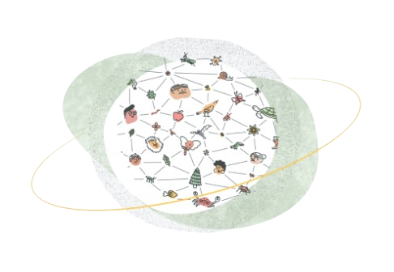

Discover trees, leaves, flowers, and biodiversity records documented across the university campus.

BioVerse GU is a digital biodiversity documentation platform developed for Gauhati University. The website aims to preserve and organize information about trees, leaves, flowers, and biodiversity found across the university campus.
The platform supports biodiversity awareness, environmental education, and species exploration through an interactive web-based system.
Discover tree species and biodiversity records across Gauhati University campus.
Access scientific names, classifications, and plant descriptions.
Explore wetlands and ecological regions supporting biodiversity.
Upload and organize biodiversity photographs and records.
Promote environmental awareness and biodiversity conservation.
Explore biodiversity hotspots, wetlands, forest regions, and tree-rich zones across campus.
Acres of wetlands supporting biodiversity at Gauhati University
Acres of natural forest and green ecosystems
Tree and plant species planned for documentation
Dedicated biodiversity exploration platform for GU
Search biodiversity records using tree names, scientific names, or plant classifications.
Explore scientific information, images, and biodiversity details across Gauhati University.
Document and organize species observations and biodiversity information collected on campus.